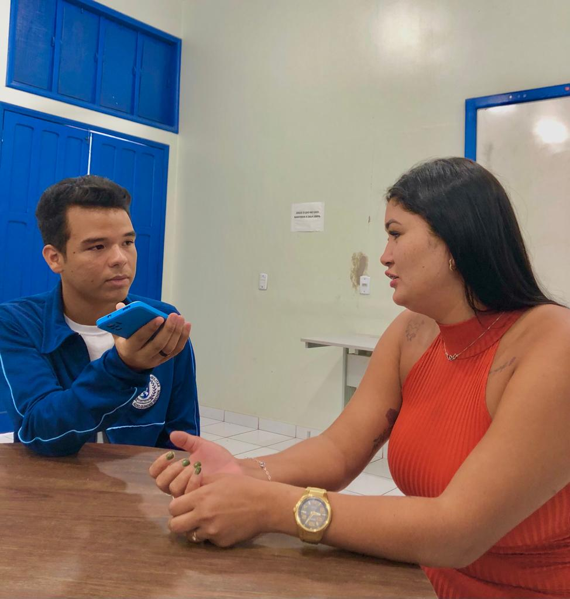
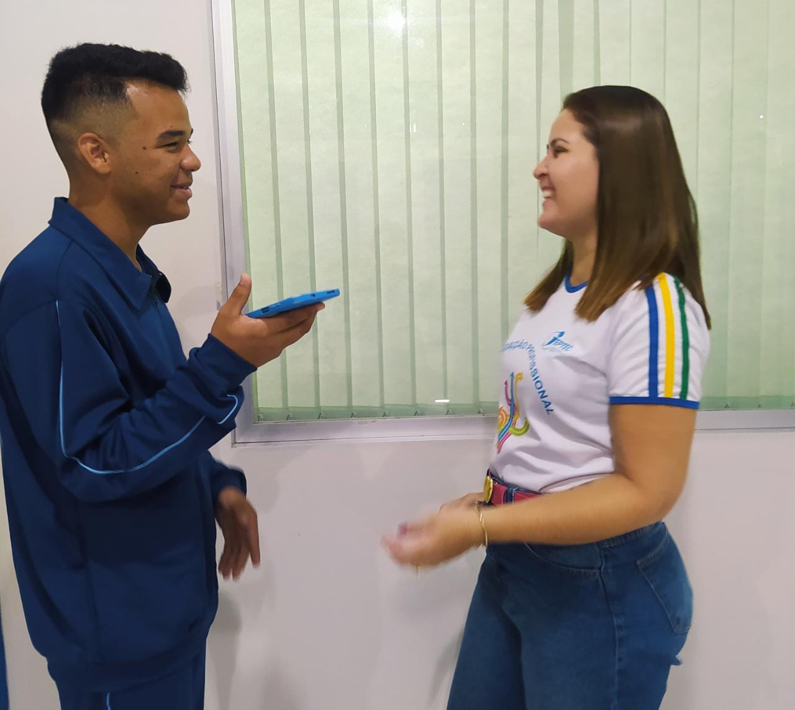
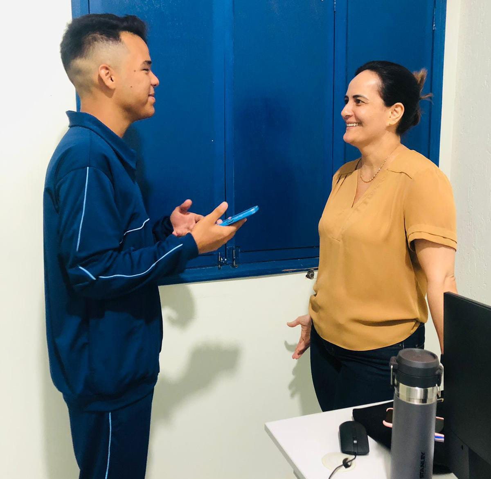

Depoimentos da equipe do CEFLORA
Representante do setor administrativo:
 Trabalhadora do setor administrativo Andreia “Em relação à estrutura, eu acho que é uma estrutura adequada para os alunos, que acolhe bem. E já na parte da merenda dos alunos, eu acho que deveria ser de mais variedade para os alunos, como vem só carne e frango, vim outras variedades. E lá dentro da secretaria, eu acho que falta mais diálogo entre os funcionários. Tipo, em questão de você pedir para eu fazer uma coisa e a pessoa me entrega, e não me explica o que eu vou fazer. Tipo, a pessoa se vira. Não tem diálogo entre eles. É, faz pouco tempo que eu entrei, só com 3 meses. E dentro desses 3 meses, não mudou nada. Só ladeira abaixo. Porque o pessoal aqui gosta muito de conversa, se intromete na vida da pessoa, julga as pessoas, até mesmo os alunos. Alguns funcionários, não fala de todos, mas alguns. E, em relação de salário, eles atrasam muito, não pagam no dia certo, a gente tem conta para pagar, em tempo de ser preço e o agiota mandar matar e eles não pagam.”
Coordenadora:
 Coordenadora Nayara. “Bom, os nossos cursos são voltados para a área profissional e tecnológica, como vocês sabem. Nós trabalhamos com cursos de qualificação profissional e técnico. Inclusive, nós temos professores na nossa instituição que foram nossos alunos, tanto na parte administrativa, como na parte da informática. Então, a gente percebe que os nossos cursos trazem benefícios para os nossos alunos, Porque, a partir do momento que ele finaliza o curso no ceflora, ele já pode ser inserido automaticamente no mercado de trabalho. Isso, como eu falei para vocês, como nós temos cursos... Atualmente, nós estamos trabalhando com o novo ensino médio. Então, os nossos cursos, eles estão voltados para os alunos do ensino médio. No entanto, nós também temos cursos voltados para a população em geral, que são chamados de cursos fixos, que são cursos rápidos de, mais ou menos, uns três meses de duração. Então, assim, além de beneficiar tanto os alunos do ensino médio, do novo ensino médio, com cursos técnicos e de qualificação, nós ainda temos cursos voltados para a população em geral, também que se beneficiam com essa formação aqui na instituição. Olha só, nós sabemos que a maioria dos jovens, o sonho é passar no Enem, né? Fazer uma faculdade. No entanto, nós sabemos que nem todos conseguem se formar, né? Se formar numa faculdade. Então, ele tendo um curso técnico, automaticamente ele já pode se inserir no mercado de trabalho, uma formação técnica e isso é uma das vantagens dos cursos do ceflora, porque o aluno já sai do ceflora com uma qualificação e aí ele já pode se inserir diretamente no mercado de trabalho. Atualmente, a nossa demanda está voltada para o Ensino Médio, o itinerário formativo 5, que trabalha com o novo Ensino Médio. Então, nós trabalhamos com as escolas estaduais. E aí nós atendemos a demanda dessas escolas, por exemplo, com os cursos. Os alunos eles, por exemplo, nós levamos os cursos e aí a instituição juntamente com os alunos escolhem qual curso ele quer fazer. Nós levamos umas trilhas ou até mesmo curso técnico, vários, a gente apresenta e aí a escola, juntamente com os alunos, elas decidem qual curso que elas querem fazer. Então isso é uma das nossas demandas atualmente, trabalhar com novo ensino médio, qualificar esses alunos para que eles possam, futuramente, além de fazer uma faculdade, eles já terem um curso técnico. Vamos falar agora um pouco a respeito de investimento. Não precisa citar tanta estatística. Os nossos alunos, eles recebem uma bolsa, como vocês sabem. A partir do momento que eles se inscrevem no curso do Ceflora, ele automaticamente já recebe uma bolsa. Essa bolsa é um investimento. O aluno vai usar esse dinheiro pra comprar um lanche ou pra comprar o material que ele tá necessitando. Ele recebe dois reais por hora a aula. Então assim, dependendo da carga horária do curso, às vezes ele faz um curso de cento e sessenta horas, por exemplo, ele vai receber trezentos e poucos reais. E assim sucessivamente. E aí o Instituto vai pagar a bolsa dos alunos. É basicamente isso”.
Diretora:
 Diretora Railene. “Os dados estatísticos a gente não tem, mas a gente tem assim, notícias de alunos nossos, que fizeram os nossos cursos, que estão no mercado de trabalho. Então, assim, eu posso dizer que 60% dos nossos alunos que fizeram os cursos, eles ingressaram no mercado de trabalho, principalmente os alunos da área de informática e da área de saúde, que são os cursos que, eles são o mercado de trabalho, ele absorve mais os alunos que eles concluem esses cursos. Porque a gente, os cursos profissionalizantes, ele prepara, é aquele intermediário entre o médio e a faculdade. Então, a gente sabe que para você ingressar no mercado de trabalho, você tem que ter um currículo, você tem que ter alguma habilidade. Então, esse curso técnico, ele dá pra você essa habilidade que o mercado de trabalho exige, ou seja, você que está fazendo o curso de informática. Você vai sair apto a exercer uma profissão antes de você fazer a sua faculdade. Um que faz um curso de administração vai sair apto a exercer uma profissão antes de uma faculdade. Então, é um trabalho grandioso. Porque as pessoas vão ter uma oportunidade de ter um trabalho, porque às vezes a gente fala assim, tem um grande índice de desemprego, mas há uma oferta de emprego, só que não tem mão de obra qualificada para ocupar esses espaços de trabalho que tem disponível. Porque, digamos que o ceflora é como se ele fosse um porto seguro, porque os cursos que são entregues aqui, Em outras instituições podem ser pagos. O Ponto de procurar o Ceflora é porque os nossos cursos são gratuitos. Ou seja, os cursos que nós oferecemos aqui são cursos que em outras instituições como o SENAC, o SENAI, do Sistema S e outras instituições também são cursos caros, principalmente cursos de informática e cursos da área de saúde que envolvem insumos, envolve práticas. São cursos gratuitos, são cursos que têm qualidade, são cursos que são reconhecidos pelo MEC, são cursos que são reconhecidos pelo Conselho Estadual de Educação. Nós somos parceiros da Secretaria de Educação, então, além de oferecer o curso gratuito, nós temos todo um cuidado em relação a seguir as leis, os regimentos que regem a educação do Brasil, como também a gente procura ter profissionais qualificados pra trabalhar dentro do ceflora, como também no IEPTEC. O aluno é o nosso foco principal porque como eu falo para as pessoas que trabalham aqui, são os alunos ninguém aqui tem emprego, ou seja, os alunos são o motivo de nós estarmos aqui, sem os alunos o professor não tem trabalho, eu não estou aqui, a merendeira não está aqui, então o nosso foco principal é o quê? um trabalho de qualidade para os alunos, porque os alunos é o que mantém a instituição. Porque o ceflora, ele é uma escola vinculada do IAPTEC. O IAPTEC é uma autarquia da Secretaria de Educação. Então, quem manda recursos pra cá é a Secretaria de Educação, que manda a merenda, que ajuda na manutenção, que tem alguns servidores aqui e o IPTEC também ajuda na manutenção e tem alguns servidores. Então, essa questão de orçamento, de manutenção, de merenda, de toda a estrutura financeira, é gerido por eles, tanto pelo IPTEC, quanto pela Secretaria de Educação. Porém, todo o recurso da Secretaria de Educação e do IEPTEC é recurso do estado, do estado do Acre e do governo federal que é o MEC que envia.